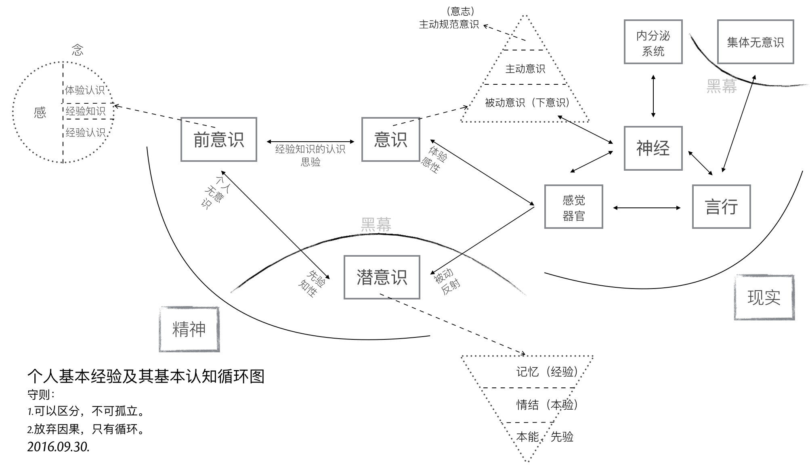
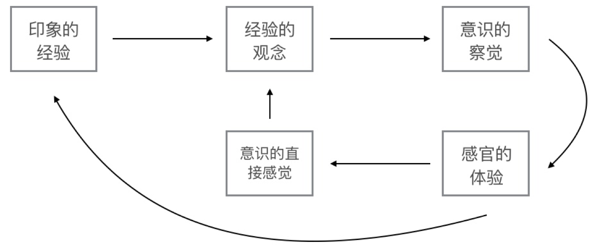
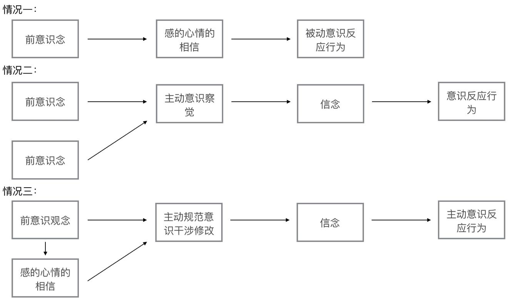
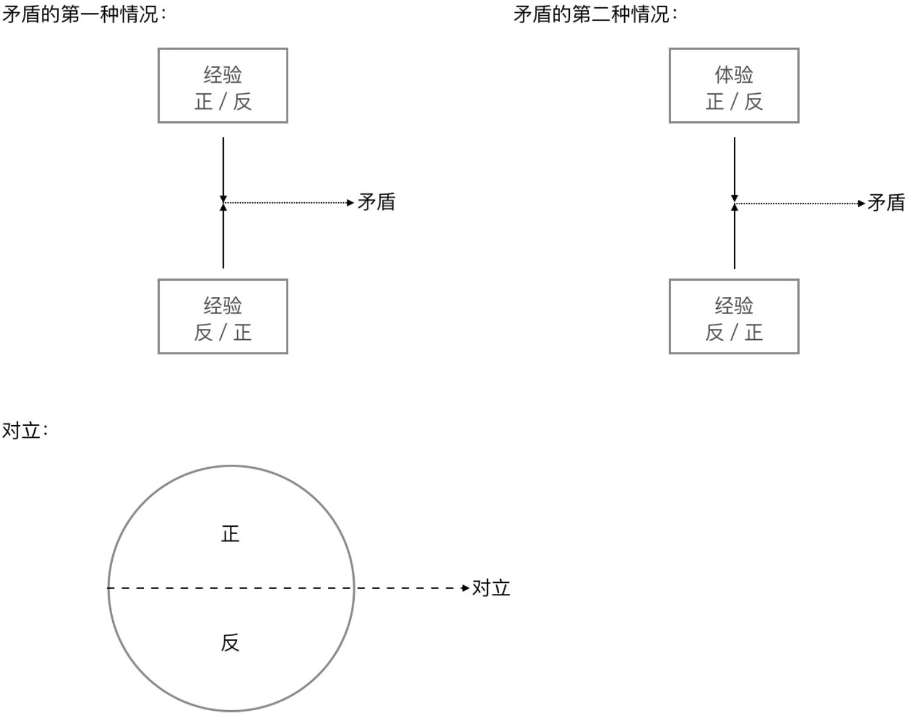

个人基本经验的基本认知杂录
欢迎发邮件与我讨论，邮箱地址：mudand88@icloud.com。

尽可能早地完成思辨的大厦，然后才开始研究它的基础是否扎实，这是人类理性在思辨中的通常命运。但在这种情况下，各种各样的溢美之辞就被找出来，使我们因大厦的出色而感到安慰，或者还宁可拒绝这样一种迟到的、危险的检验。但是，在建造期间使我们摆脱任何担忧和疑虑并以表面上的缜密迎合我们的，就是这种东西。我们理性的工作的一大部分、也许是最大部分，就在于分析我们关于对象已经拥有的概念。这一工作给我们提供了大量的知识，这些知识虽然无非是对我们的概念中（尽管还是以模糊的方式）思维过的东西作出的澄清和阐明，但至少就形式而言仍被认为如同新的洞识，尽管它们就质料或者内容而言并没有扩展、而是仅仅解析了我们所拥有的概念。
——伊曼努尔·康德
2016.09.06
被动意识的认知缺陷
在我看来被动意识在其相对优越性的基础上有着认知的缺陷，有一个例子可以很好证明这点。我们可以试着想象有一根极细的线，当它一笔画出，我们一看便知它是一根线。而当我们在这条线上再划上一笔，线条被加粗后我们仍旧可以不假思索地说这也是一根线。我们之所以把加粗前和加粗后都同样置于“线”这个名词概念之下，是因为在我们的习惯性认知中线本有粗细之分，而无需刻意判断便可分辨出来，这是被动意识，也是它优越所在。那么问题出在哪里？让我们试着用笔在这条线上不停地划，线条随之加粗，我请问我们知道在确切的某个程度上不再把它形容为“线”，而是形容为“长方形”吗？我们都知道点、线、面、体，当线条被不断加粗后便可以形成一个面，但是怎样程度的粗细算是线，怎样程度的粗细算是面——我们并不能准确说出，它是一个主观概念，唯一知道的是在某个范围之内我们把它称作“线”，超过了这个范围我们把它称作“面”。
这就是我所说的认知缺陷，对感官的任何主观刺激在意识中必有所反映，而刺激量的多少决定了意识的被动还是主动。随着线的加粗（感官的不断刺激）主动意识被调动起来修正认知，正因如此有了点、线、面、体的概念区分，也因为意识从被动到主动的自动转换我们无法知晓在哪个固定的程度上做出区分，我们早已习惯听凭任意。
2016.09.08
体验与经验
- 感觉器官的印象（体验）
- 记忆的印象（经验）
“印象”一词我以为可以分两种：感觉器官的印象和记忆的印象，也可以说是体验与经验。体验是感觉器官与意识之间直接产生的，而经验则需经过潜意识、前意识的过滤才可以进入意识，由此我们可以清楚地看到纯粹的经验论对于实际言行的失败负有相当责任，不该仅仅依赖于它。与此同时，当我们极其自然地靠经验做事，不该就此忽略体验的重要性，体验是修正经验误差的最有力武器。
详细地说，意识与感觉器官的循环在这里应该是意识先有，感觉器官做出反应，然后又通过感觉器官将单独的直接感觉反馈给意识，这是体验。潜意识与感觉器官的关系则是感觉器官发出曾经有过这样的反应与其直接感觉，将这两种记忆一起带入潜意识之中，这是经验。举例说我用手拍桌子，是我意识先想着把手往下放拍桌子，然后我才实际地用手拍桌子，而反馈给我意识的仅仅只是痛觉与桌子本身的坚固（直接感觉），这就是体验。相对应的，感觉器官带入潜意识的则是曾经用手拍过这桌子的记忆，加上拍桌子的痛觉、桌子本身坚固的直接感觉的记忆，这就是经验。
我把体验与经验当作“格物致知”基础中的基础。
2016.09.09
因果恒常结合

在体验、经验的观念与意识三者之间的循环形成了因果关系的“恒常结合”。当我们已有印象的经验变为经验的观念（前意识），经验的观念通过意识的实践，意识的实践通过感官的体验，感官的体验在此进行两种反馈——通过意识直接确认或否定被实践的经验的观念，通过潜意识再次转化为经验。
事情到这里还没有结束，当意识通过直接感觉确认或否定原有的经验的观念以后，新的体验进入前意识世界与旧经验的观念碰撞，一个是因、一个是果，所谓“恒常结合”就是如此？其中细节或许还可以继续推敲，但大致思路应该就是这样。
为什么结合只在前意识世界进行？因为当我们举例子时都是简单的行为，我们看似能很快理清一切头绪，可当事件复杂化，意识的片面性问题、认知缺陷问题就会马上凸显出来，然后我们自己都会承认根本分不清因果，所以结合只在前意识世界。
2016.09.10
两种信

信可以为分为两种，一种是前意识感的心情的相信，一种是前意识念的信念，也可以暂时排出例外将它们形容为被动的相信，主动的信念。何谓信念？信念是有理由的相信，是心智理性的结果。当两个基本念对立起来需要抉择，在主动意识下得出的结果是全新的、独立的，可以依靠与原有念的一种，也可以是二者的融合，不变的是演变后的信念本身带上了理性权衡的结果和权衡的经过——理由。
信念是相信某个念、为什么相信这个念、这个念是什么的集合，而不仅仅只是相信。
信念是观念的一种，观念是念的一部分。
感与念可以区分，不可以独立。
2016.09.11
经验、经验的观念、思验
经验是单一的、多个的、记忆印象的，哪怕怎么类似也没有完全相同的经验。经验的观念是经验的一个集合，放弃了印象的作用，趋于理论化、抽象化，知或不知，对个人而言带有些许感性，对公众而言则是纯粹理性（这种纯粹理性有无意义则是另外一回事了）。
经验告诉你曾经这样做，经验的观念告诉你应该这样做，体验告诉你这样做对或不对，思验告诉你为什么要这样做。
经验通过思验才有经验的观念，不存在思验的观念和体验的观念，我以为“信”的三种情况和两种参考是理解意义上的很好参考。
体验短暂而强烈，经验持续而模糊，思验精确而不定。
前意识到意识的所有活动是思验、经验的，感觉器官到意识的所有活动是体验的，还有一点必需说明，正如昨天形容感和念一样你可以区分它们，你不可以孤立它们。
在我的思考中没有绝对的因或果，只有循环的存在，你可以区分当前的表象的因果，你不能孤立绝对的因或果。（我不确定这样想是对是错，姑且是个建议。当代电脑软件号称人工智能，可以这种人工智能只是因果，没有循环的存在就不配称作智能。）
对思验的考虑
什么是幻想？是类似于判断的一种过程，还是类似经验或观念？我以为它或许是某种“验”，思验？是众多具体循环过程的集合，诸如理性、因果、幻想、逻辑等等。
思验是纯粹的心理活动，无法被经验、体验。思验所表达的能被语言和文字表现出来，而思验本身则无法表现出来，至多只能通过几个特殊概念的字词来形容。这些字词在各个民族中广泛存在，足以说明思验的存在，足以证明它应与体验、经验并列在一起。
没有完全的思验，经验的观念中无法剔除“信”等感性的存在就是思验不完整的最佳证明。
守则第一条：可以区分，不可以孤立。
参考性建议第一条：放弃因果，只有循环。（循环不是孤立的几个联结环之间的循环，而是犹如神经网络般错综复杂的循环。）
为了快速转变思维，守则与建议的确立是必须的，而如果有一天它们被打破，我只会高兴自己的又一次否定，而不是坚持固守它们。
我所说的“被动反射”只与潜意识的记忆层面有关，与情结、本能无关。
2016.09.12
感性、知性、理性
如果没有被动意识人类活不到下一分钟，因此哪怕有认知的缺陷，它也是必不可少的。
主动意识的有限导致否定无法无限次地进行，这也确定了被动意识与主动意识的平衡，不至于相互侵蚀一空。
被动意识的不可排除证明主动意识的有限，主动意识的有限证明信念之中依旧存在被动意识的残余，即前意识感的残余，所以观念之中可以分出信念这个概念。现在的问题是，既然主动意识可以产生信念，那么被动意识凭借的又是什么？毫无疑问它也是前意识念的一种，可到底是哪一种，如何形容它？我至今未能解决这个问题，我怀疑它根本不是经验的观念，而是与其之外另有他物。
被动意识的认知缺陷进一步可以证明主动意识的有限，因为意识作为一个整体始终无法通过主动意识去真正弥补被动意识的这个缺陷。
推到不重建是怀疑，推到之前先新建是否定，否定需要现成的资本。
感性＝直观认识＝体验＝感觉器官到意识这条路
知性＝思想观念＝经验＝感觉器官到潜意识这条路
理性＝思维思考＝思验＝专指前意识到主动和主动规范意识之间
2016.09.13
- 没有什么是单独进行的，体验、经验必须同时进行，哪怕是最基本的生理反应。
- 思验包括了理性的推断和感性的判断，是否仅仅只有这二者还需考虑。
- 意识察觉到的是经验可察觉部分，不可察觉的经验在潜意识中，而不是在前意识中。
- 人能意识到的思验就是思验的全部。
- 精神世界的进步前景在于前意识的认知以及意识的缺陷的弥补，潜意识世界应该留到最后。
- 意识没有办法绕过前意识范围直接思验潜意识，而通过外部论证又逃脱不了意识本身的认知缺陷和潜意识的经验反射，因此在解决意识和前意识问题以前讨论潜意识是无用功，或者至少是片面的。
- 意识是随着人类个体的成长茁壮起来的，不是潜意识要与意识争夺精神空间，而是意识要与潜意识争夺精神空间。
- 感官到潜意识并不是条件的，仅仅只是反射，哪怕“被动”也是一个不准确的形容词。
2016.09.14
对立与矛盾
当体验、经验双方思验地交锋在一起，这便是矛盾的产生——矛盾的一方是体验的确认或否认，矛盾的另一方则是与体验相反观点的经验。人们太偏爱二元论，因为通常情况下人类的认知获取路径便只有这不完整的两条，人们太偏爱总结归一、打破矛盾，因为通常情况下这两条认知获取路径需要同时经过思验的抉择，而结果只能是一种，不花大力气便再难以改进的一种。
从矛盾角度说“信”的三种情况是需要修改的，我没有考虑到经验与体验的碰撞。但如果说经验或体验单独里面两种看似对立的概念也是矛盾，我以为是不合适的，因为它们同源，而同源意味着调和，意味着看似矛盾的双方来自同一观念——它们的对立仅仅只是概念的区分，而矛盾是孤立双方的对抗。
2016.09.15
没有逻辑矛盾才有对立

当我们从经验中提出一个命题，我们会很是自然而然地再从经验中提出一个相反的看法，一个命题两种看法，哪怕是同样出自经验看起来也似乎是矛盾，而不仅仅对立。我在这里考察的是逻辑意义上的矛盾，当我们说时间永恒，我们便涌现出时间不永恒的念头，这两种对时间的不同看法各自都有一大堆理论支撑，而没有一个是在当前体验中得到任何证明的，我们想起时间，仅仅只是经验地想起。就像我们说宇宙有限、无限一样，这不仅仅只是文字游戏地玩弄，它们的背后的的确确有着知性的不同支撑，而它们的终点则是理性地碰撞——矛盾又或对立又或其他？
只有经过经验逻辑矛盾的审查，才有经验的单个观念中复数概念的对立。如太极生阴阳，阴与阳便是对立的；如意识分主动被动，主动与被动便是对立的——这类概念没有逻辑的矛盾，因为我们知道双方无法完全排除任何一方（甚至是相辅相成的），而矛盾最终目的在于消除其中一方（将一个看法的特征单独加于本身观念之上），所以它们通过了逻辑矛盾的审查，变为只是概念区分的对立。
理性不仅仅只是逻辑，感性也不是没有逻辑，只有知性不存在逻辑。
2016.09.16
崇高与美最初步理解
崇高短暂的原因在于失去了体验与经验之间的差距，新的体验已经作为经验的一部分，因此再难以因为体验而崇高，除非经验本身拥有唤醒信念、执念的存在。可就算如此，那时的崇高也不再是眼前的某物，而是心中所想的某物。
美则完全不同，感官世界中体验美的强烈是由唤起心中原有经验的多少决定，体验有多少符合经验，它就能获得多少美感，从这个角度说唤醒个人幻想、梦想的经验将收获最强烈的美感体验。而当现有的美感体验和崇高一样化作经验，美感也不会马上随之消失，因为眼前的事物依旧是符合经验的美的，所以谈到美的时候我们总是说“审美”。
2016.09.17
存在的一点最初步理解
经验与体验同时赋予物质存在，物质才被承认存在，经验知性地赋予，体验感性地赋予。那么理性呢？理性在这里与存在概念无关，因为感性自己已经能够很好地工作，只有在感性无法清晰完全地感知，传入意识之中的内容断断续续、模糊不清时才需要理性地辅助，因此理性对于物质的存在来说至多是辅助性质的，更多时候是无关的。
理性看起来好像可有可无一般，照这个倾向我似乎应该大喊一声“去理性”，可事实上任何事物、任何概念不是你想去就去、说没有就没有的，就我现在而言，存在便是一个只能够模糊感知的对象，我不可避免地运用理性力量。当你知道某物存在，你无需运用理性，感性便能正常工作，可当你想要说明此物的存在，你必须运用理性。好在一个人不用时时刻刻说明什么，理性的缺失实在理所当然。
这样的理解也许还是大逆不道的，但只有当我们更深刻地认识到自己的不足才有可能弥补这些不足，一个连认识都做不到的人没有改进的可能。
2016.09.18
先验知性
什么是经验的经验？一个假设，经验的经验即由感性直接演变而来的知性，即先验知性。它是这样形成的：感官的直接感觉由意识感知到，意识将这个体验带入前意识，感性思验判断之后变成单纯体验的结论，最后前意识将这个结论带入潜意识黑幕之后，而我把这个前意识到潜意识到过程称之为先验知性。在我初步考察后我以为诸如存在、时间、空间等概念就是这样首先形成的，它们最早、也一直有那么一部分属于先验知性。
以为这样就算知道了先验，甚至已经掀开黑幕一角？完全错了，我是经验地晓得先验，我不可能先验地晓得先验，说知道先验那就是个笑话，说掀开黑幕更是无可救药的自大。问题依旧没有完全解决，换一句话说：是什么点亮了这个循环？在潜意识中经验与先验又是经过了怎样的转变？
一个暂时无法更好发明、更恰当应用的例子：我知道眼前的物体一重十斤，一个人走过来告诉我物体一比我从未见过的物体二重两斤，那么我仅凭这句话便知道了物体二重量是八斤。我是怎么知道的？
- 我知道十减二等于八，并能很自然地运用在这里
- 哪怕我从来没有见过物体二，我也能通过名词概念与物体产生认知
- 我相信这个人的话而不是选择费力寻找到物体二并称重它
- 两个毫无关系的物体经验能够通过另一个独立的感官经历被清楚地体验认知，经验并非仅能通过经验认知
2016.09.19
- 体验、经验、思验、本验、先验，这五个“验”构成了个人的认知框架。
- 时间、空间、存在三大概念在子宫里，也就是说在出生以前已经被先验完成，它们最早、也永远有一部分是先验的。
- 人类所能表象的空间已经有三个：二维、三维、四维，这一论断证明空间并非仅仅先验。
- 近现代科学对灵感与大脑的研究证明思验只有在尽可能少的受外界干扰的时候才能发挥作用（无论是我们行为地逃避干扰，还是大脑自身作用屏蔽干扰），日常交际生活我们大多靠着经验知识，即直接从前意识中提取，而不做任何过滤。
- 我昨天显然搞错了，经验的经验是本验而不是先验，但之后的话还是描述先验的，不是本验。昨天的一个问题应该随着本验被提出改为：在潜意识中先验与本验与经验经历了什么过程？
- 我很想说所有的前意识都是经验知识，但对先验的浅显理解让我无法肯定这个命题。
- 依旧支持思验中不仅仅只是理性，也包括了感性。
2016.09.20
先验的一点补充说明
潜意识先验的确立及其完善只在人类极早期（其定义应该以月为单位计算而不是以年为单位）乃至尚未出生的情况下，即意识无法做到很好利用经验知识的前提下——一旦意识的成长达到利用经验知识的地步，潜意识先验就已经完全确立下来，再无变更，剩下的只有思验融合之下的体验与经验，二者皆无法纯粹。当我们说到这里，有一个情况十分值得注意重视，就是当我们成长以后的健全的意识体验遭遇与潜意识先验完善处于相同场景的时候。这种情况十分常见，其实我们都不可能摆脱这些场景的网罗，想想存在、想想空间、想想时间，哪一样是我们可以放弃的，哪一样与先验完善的时候有本质上的不同？没有，因此先验之所以先验，本能之所以本能，是因为它们的的确确再重要没有，再常见没有（它们不是影响我们，可以说它们控制我们）。当它们凌驾于经验之上，一颗强大意志与清晰思验的心也无济于事，因为所以成人。我们可以把先验、把本能（在我看来同是一物）看作劣根、看作局限性的罪魁祸首，可不要忘记是它们最早教会我们什么是世界、什么是自己——你会因为自己的鼻子比狗的鼻子迟钝而割掉自己的鼻子吗？你会因为眼睛的近视而挖掉自己的眼珠吗？你不会，因为你知道这样的你是一个完整的人，少了任何一部分都是残缺。
这种意识体验与先验本身的呼应也许可以让我们一窥先验本身，可它是思验想象的，换句话说它依旧混入了经验，哪怕纯粹的体验我们也已经做不到了。先验的确时刻被我们利用，我们却无法因为它们被利用而回溯到它们本身，它们的认知始终是模糊的、抽象的。
先验的运用范围只是事物的表象，而非事物的本质。事物表象与事物本质的区别我们无法考察，但我们可以先向后退一步，转而询问自己个人表象与本质的区别，然后事情也许有部分进展——显然表象也属于本质，是本质的一部分，你甚至可以说表象是本质的唯一表现途径，因为那个名词本身字义已经把所有的表现包括在了一起，而任何本质想要展示出来只能“表现”。从这一角度看，说一切表象皆为荒谬是不正确的，我们只能说表象有其局限性，我们不能直接武断地说表象没有价值。
2016.09.21
心理治疗与潜意识之间的一个假设
当我在前意识和潜意识之间的那条线上写明“先验知性”的时候，我并没有意识到我将这条心理治疗的通道完全限定死了，也就是说前意识到潜意识如今只有一条路——先验知性，它在我们成长以后就已经完全封死了。我看见过的精神分析学家都说心理治疗的基础是建立在如下基础上的：前意识能够影响潜意识，潜意识能够因为意识的改变而改变。它的确能够改变，只不过这种改变在我们真正需要改变的时候早已无法改变了。那么心理治疗建立在什么基础上呢？我以为它建立在意识到前意识的作用强大于潜意识到前意识的作用，所以被治愈了。它是被战胜的、被征服的，可原先的作用自始至终徘徊在前意识之中，这也更能说明为什么心理治疗最容易复发，它的治疗必须经年累月地观察才能断定。这一假设可以暂时总结如下：
- 潜意识除先验知性以外无法被前意识改变。
- 先验知性在我们成长以后已经无法工作。
- 潜意识到前意识的经验无法消除，它如果希望不被意识察觉并表现出来只能让意识从外界有一个新的体验，作用地把它压倒，而且是持续性地压倒。
- 这一压倒一直到要到与意识体验一同产生的经验经过潜意识、前意识，最后重新被意识察觉，可即便如此最早的那个经验也不是被改变的，是被覆盖的。
- 心理治疗之所以长期是因为这一经验想要达到覆盖的地步，它的第一步就是让体验先行的习惯，而习惯从来不是短期能够形成的，尤其是修正性质的习惯（这时你需要用到的只能是主动规范意识）。
2016.09.22
先验、感、念、思验、意识（被动？），还有太多尚未被发掘。
先验的感
先验的感不是前意识感的全部，它就是我以前说的那个“没有陌生的感”，而之后感的变化则非先验所有。先验的感是单纯的、没有矛盾和纠缠，感的复杂是意识成长以后体验与经验碰撞的结果。这种碰撞引出的一个常见现象就是碰撞以后的感虽然依旧是没有陌生的感（它不可能诞生新品种的感），范围也没有脱离先验网罗，但是碰撞出现了新的组合，将原本互不干涉、互不矛盾的感以不同剂量放在一起，让你有错觉以为前所未有，而事实上你也的确无法理清这堆乱麻了。这一现况直接导致当我们幼年的时候虽然最是单纯，但随着年龄的增长心思越发繁复，情感也越发迷离不清，因为我们无法摆脱体验与经验的矛盾，它们总有碰撞的时候，无论是结合的一体，还是残存下来的碎片。
康德所说的内外感官我以为就是先验的前意识感和感觉器官，先验之与感关系重大，先验的利用很大一部分就是前意识感的使用。
感本于、源于先验，这是我所确信的。
先验的念
我依旧不能肯定有先验的念存在，因为我不知道潜意识中先验到底经历了什么。正如我们考察事物本质与表象一样，在这里我们也应该先退一步，试着提问经验的概念如何产生。当感觉器官通过体验、经验两条途径被认知，体验是实时的，而经验则是滞后的。短暂的体验过后我们开始检查便可发现在经验中其实也有着体验的感觉，只是这种感觉是抽象的、记忆的——经验无法做到再次让我们亲身体验，它只是做到让我们记得曾经有这种感觉。在这里我必须说记忆本身就是概念化的，它与我们所谓的思想、理论区别只在于广泛性、纠错性的多少。
先验与经验就这一形式而言我以为没有分别，因此我们可以看到当先验知性第一次将其带入潜意识，它不能做到再次让我们的感觉器官有一次完全相同的体验，甚至做不到让我们的意识能够再次主动地察觉到它。因此先验必须被概念化，体验时效性的局限迫使先验没有第二个选择。
如果我继续这样思考下去，那么潜意识也将变得和前意识在性质上没什么分别，它们都是一个大仓库（黑幕的仓库），而不是什么思想的发源、动力的基础，它仅仅只是一个不为我所知的储藏记忆、情结、本能的空间。而相应的，先验的念的产生是意识体验与思验单独结合的结果，在前意识中先验已经被概念化，并且留下了先验的感（即没有陌生的感、基础的感），只让先验的念通过先验知性进入潜意识，成为潜意识的第一块基石，也是在这块基石之上本验、经验得以成长、健全。
当我们事后试图在前意识中寻找先验的念，我们注定一无所获，因为前意识中根本没有了先验的念，先验的念早在潜意识中化为基石，当它再次浮现出来，唯有经验。
2016.09.23
真正的本能所在
如果我将先验放在原来本能的位置，那么不仅仅意味着代替了它的位置，更是代替了它原有的概念（又或浑然为一物），我等于在承认人类只能通过外界才有最初的认知，人类自身则是一无所有的——可是实际情况并非如此，我们看见当我们从精子卵子的结合开始，人类自身就在孕育着什么。我们是有了生理的基础，然后才开始对外界的认知，而不是经过外界认知才从某处虚无钻出人形。因此，我请问我们真正的本能是什么？它如果不是先验，它还能够是什么？在这里必须首先承认人类是有生理基础才有心理基础，而不是有了心理基础才有生理基础。如果说生理的基础是襁褓之中的孕育，心理的基础是先验的存在，那么从生理的基础进化出心理的基础（也就是我们通常描述的生命的赋予）——它的这个过程的具体内容就是真正的本能，而它准确的说并非传统意义上的心理、精神。
所以我们看见弗洛伊德在《超越快乐原则》中修正自己本能学说的方法和基础是建立在生物学上的，是从有机物和无机物的理论推论出生与死两个本能。
2016.09.24
经验、经验知识
记忆是加工的，经验是修正的，这两个名词都是主观的，它们的完成则是在潜意识中已经完成的。为什么我们的经验都是主观的？是的，一个很大的原因是因为经验是抽象的，所以它必须是主观的，可除此之外还有着更大的原因：经验在从潜意识中浮现出来以前必须经过先验、本验的修正，或者说补充、或者说取舍——因此它必然是主观的。
当经验经过这一系列修改终于进入前意识并希望得到意识察觉，它这时候还不是什么“知识”，因此唯一的通道是感性思验，与一切先验地被利用一样经验携带上了大量感的心情的相信感性思验地进入意识。意识经验地现实运用产生新的类似的联结的体验，它的第一客观判断与经验原有的主观印象和在了一起，这时候思验趋向理性，在不纯粹理性思验的推断之下经验得以成为经验知识（也就是以前说的经验的观念），并储藏在前意识中等待意识下一次的直接运用。
我们可以清楚看见经验第一次浮现在前意识中时，它受到先验、本验的绝大影响，所以它能够携带大量的感的心情的相信。可是当经验与体验实践结合之后它便不再是经验本身，转而成为不成熟的经验知识，它的再次运用也将是相对而言更多程度上的知识运用。在这里主观影响的确随之减弱，可仅仅只是减弱，要问能否无限减弱直至消失主观影响力这一问题，它和一切有限、无限问题一样无解，另外还有一个几乎可以断定的事实反对这一问题的无限可能性，那便是意识与思验并非无限，而意识和思验是客观修改的资本所在。
经验知识、可接受的经验在前意识中，潜意识中只有不被接受的经验、本验和先验，这一点和我二十一号做出的那个假设是相通的，它是一层层覆盖的。
古人云“格物致知”，显然已经把上述经验知识的过程早说明透彻了。
意识无法单个的、专注于某处的运用，它的运用是将我之前所提出的所有概念同时性的、无时无刻地运用，任何一个概念都做不到放弃。正因如此，意识在表面看来有着极其高度的统一性，一种声音一种行动，哪怕其自身的三个分类也只能是概念上区分，而做不到彼此划清界线（守则一）。综合与分析（或者类似意义的其他字眼），这正是我们思维所惯用的方法，正是我们意识所本有的功能。
格物致知是将原本综合的统一的意识、思维打散，它是分析的（正如我这些天所做的一样）。而当它打散、分析到一定程度的时候便需要新的综合，所以我们看见格物致知下一步是意诚心正，意诚心正就是分析之后再一次的综合，将原本综合而后分析的概念再次综合在新的分析成果的基础之上——然后我们才有尝试修身齐家的可能。